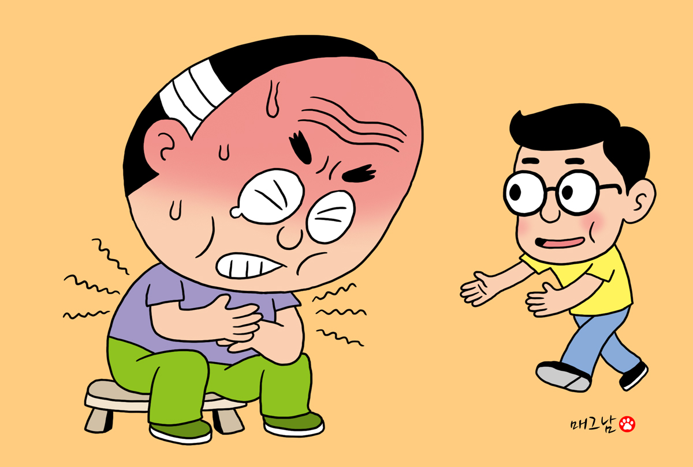

[아미랑] 암은 성격을 따라옵니다
사람의 성격과 질병 간에 연관이 있을까요? 그 관련성은 아주 깊습니다.
쓰레기를 비닐봉지에 담아 꽉 묶어 햇볕이 쨍쨍 내리쬐는 곳에 두면 어떻게 될까요? 내용물이 점점 부패해 비닐봉지가 탱탱하게 부풀어 오르다가 마침내 툭 터지고 말 겁니다. 화병, 곧 스트레스가 이와 같습니다. 방치하면 우울증, 신경증, 공포 불안, 불면증, 각종 중독, 주의력 결핍장애 등 마음의 질병으로 나타납니다. 혹은 암, 심장병, 뇌혈관질환, 고혈압, 당뇨병, 치매 등 신체적 질병으로 터질 수도 있습니다.
마음속 불덩이를 처리하는 방법에 따라 질병의 양상은 크게 달라집니다. 이 불덩이를 속에 두기 힘들어 ‘욱!’ 하며 밖으로 막 터뜨리면 주변 사람에게 불을 지르는 셈이고, 자기도 그 불속에서 함께 타버립니다. 이 병이 바로 순환기계통의 질병인 심장병과 뇌졸중일 겁니다.
성격과 질병의 관계를 연구한 미국 샌프란시스코의 의사이자 심신의학자인 마이어 프리드먼과 로이 로젠먼 박사에 따르면, 심장병과 관련 있는 사람은 급하고 화를 잘 내며 경쟁적이고 적개심이 강하다고 합니다. 그들은 이런 성격을 ‘A형 성격(Type A)’이라 명명하며, 다른 성격에 비해 순환기질환에 걸릴 확률이 6배 높다 말했습니다.
화가 날 때 옆 사람에게 막 화를 내거나 터뜨리면 속이 시원하신가요? 처음에는 화를 조금만 내야지 했던 것이, 점점 화가 더 나면서 나중에는 도저히 걷잡을 수 없는 경험을 다들 해보셨을 겁니다. 처음에는 아드레날린이 조금씩 나오다가, 점차 심해져 화가 더 치밀어 오르는 탓입니다.
A형 성격과 달리, 분노의 불덩이를 속에 묻어두고 끙끙거리며 사는 사람도 있습니다. 이 불덩이를 가슴속에만 두다보니 속이 다 타버리고 맙니다. 속이 타버리고 남은 병은 암입니다. 이런 성격은 암에 걸릴 위험이 5배로 높다고 알려져 있습니다. 캘리포니아대 심리학자 리디아 테모쇼크와 그의 제자 앤드류 나이어 박사는 이런 성격을 ‘C형 성격(Type C)’, 곧 ‘암 성격’이라 명명했습니다.
이 성격의 특징은 순종적이고 온화하며, 가슴에 맺힌 것을 풀지 못해 안팎으로 갈등을 겪습니다. 암 환자는 대체로 온화해 속에 불이 없는 것 같이 보이지만, 사실은 이미 불이 다 타버려 하얀 재가 되어버린 것입니다. 처음에는 A형 성격처럼 화를 밖으로 터뜨려 봤었지만, 후폭풍이 너무 크다보니 결국 불을 속으로 쑤셔 박고 말았을 가능성이 있습니다. 어떤 사람은 아직도 속에 잔불이 남아 있는데, 이 불을 어떻게 처리해야 할지 방법을 모르고 있습니다.
이런 성격에 충격적인 스트레스 사건이 겹치면 삶의 의미를 잃게 돼 절망감, 체념 같은 속수무책의 상태에 빠집니다. 이 마음 환경이 암을 일으키는 최적의 장소가 됩니다. 호스피스 운동의 선구자이자 심신의학자인 엘리자베스 퀴블러 로스 박사의 연구에 의하면, 암이라는 진단을 받으면 부정, 분노, 타협, 우울, 순응 같은 복잡한 감정들이 차례로 나타나다가, 점점 이것저것이 뒤얽혀 최악의 환경을 만든다 했습니다. 마치 더러운 쓰레기더미를 마음속에 마구마구 쌓아두는 것과 같습니다.
암 환자들을 살펴보면, 무표정한 얼굴에 의심과 두려운 정서가 높게 나타나는데, 이는 그간 많은 상처를 받아왔다는 뜻입니다. 겉으로 느긋하고 화를 잘 내지 않지만, 속으로 분노가 끓는 것을 그냥 억누를 뿐입니다. 인간관계가 순조롭고 안정적인 것 같지만 불을 처리하는 법을 몰라 내심 절망하고 있습니다. 결국 속을 감추는 데 힘을 허비하다 보니, 정작 암을 제압할 힘은 그만큼 약해지는 것입니다. 혼란한 정서는 암을 발생시키는데 최적의 토양이 됩니다.
지금 내 마음을 확인해 봅시다. ▲요즘 뭘 하든 별 재미가 없다 ▲짜증이 많고 작은 일에도 화가 잘 난다 ▲밥맛이 없다 ▲쉽게 잠이 오지 않고 잠에 빠지면 일어나기 귀찮다 ▲정신이 집중되지 않는다 ▲이전과 다르게 교회(절, 모임)에 가기 싫다 ▲다른 사람에 대해 관심이 없어졌다 등 7문항 중 3개 이상에 해당하면 마음관리를 속히 시작해야 합니다.
미국 스탠포드대 의대 데이비드 슈피겔 박사가 ‘암 환자에게 심리가 큰 도움이 된다’는 버니 시걸 박사의 이론을 논박하기 위해 실험을 했습니다. 1976년부터 자신의 유방암 환자 861명을 무작위로 두 집단으로 나눴습니다. 한 그룹은 외래치료만 다녔고, 다른 그룹은 외래 후 매주 1회 두 시간씩 환자끼리 모여 잡담하는 시간을 가지게 했습니다. 의학 정보뿐 아니라 일그러진 몸, 남편에게 서운한 것, 자녀 문제, 죽음과 두려움 등 자유롭게 대화할 수 있게 했습니다. 5년 후 비교해 보니, 잡담을 나눴던 그룹이 외래치료만 받은 그룹에 비해 암 재발이나 전이가 5배 수준으로 적었고, 수명이 평균 2배 이상으로 길었습니다. 결과를 본 슈피겔 박사는 너무 놀라 “의자에서 굴러 떨어질 뻔했다”라고 말하기도 했습니다. 그는 지금 세계적 심신의학 전도사로 활동하고 있습니다.
여러분, 건강 회복을 위해 밖으로 나오세요. 지금 가지고 있는 그 마음을 혼자서만 끙끙거리며 해결하려하지 마세요. 암 환자 모임이든 가족 모임이든 어디에라도 참여해 보길 권합니다. 작은 변화이지만, 성격을 조금씩 바꾸면 몸도 바뀌기 시작할 겁니다!
2024.08.14 08:50